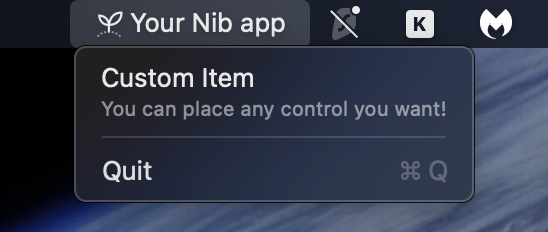

The context menu appears when a user right-clicks (or Control-clicks) the status bar icon. Set it with app.menu, passing a list of MenuItem and MenuDivider objects.

Basic Menu¶
import nib
def main(app: nib.App):
app.title = "My App"
app.icon = nib.SFSymbol("star.fill")
app.width = 300
app.height = 200
def open_settings():
print("Settings opened")
app.menu = [
nib.MenuItem("Settings", action=open_settings, icon="gear"),
nib.MenuDivider(),
nib.MenuItem("Quit", action=app.quit),
]
app.build(nib.Text("Right-click the menu bar icon", padding=24))
nib.run(main)
MenuItem Parameters¶
| Parameter | Type | Description |
|---|---|---|
title |
str |
Menu item text (optional if content is provided) |
action |
callable |
Function called when the item is clicked |
icon |
str or SFSymbol |
SF Symbol name or SFSymbol instance with styling |
shortcut |
str |
Keyboard shortcut (e.g., "cmd+q", "cmd+shift+n") |
badge |
str |
Badge text on the right side (macOS 14+) |
state |
str |
Checkmark state: "on", "off", or "mixed" |
enabled |
bool |
Whether the item is clickable (default True) |
content |
View |
Custom view content (replaces title/icon) |
menu |
list |
Child items for a submenu |
height |
float |
Custom height for content-based items |
Icons¶
Pass a string for a simple SF Symbol icon, or an SFSymbol instance for styled icons:
# Simple string icon
nib.MenuItem("Settings", action=handler, icon="gear")
# Styled icon with color
nib.MenuItem(
"Favorites",
action=handler,
icon=nib.SFSymbol("star.fill", foreground_color=nib.Color.YELLOW),
)
Keyboard Shortcuts¶
Use the shortcut parameter with modifier keys joined by +:
nib.MenuItem("Settings", action=open_settings, shortcut="cmd+,")
nib.MenuItem("New Window", action=new_window, shortcut="cmd+n")
nib.MenuItem("Quit", action=app.quit, shortcut="cmd+q")
nib.MenuItem("Refresh", action=refresh, shortcut="cmd+shift+r")
nib.MenuItem("Toggle", action=toggle, shortcut="opt+t")
Supported modifiers: cmd, shift, opt (or alt), ctrl.
Badges¶
Badges display a small label on the right side of the menu item. They are useful for showing counts or status.
nib.MenuItem("Updates", action=check_updates, badge="3")
nib.MenuItem("Messages", action=open_messages, badge="New")
Note
Badges require macOS 14 (Sonoma) or later.
State Indicators¶
The state parameter shows a checkmark, no mark, or a mixed indicator:
nib.MenuItem("Enabled", action=toggle_feature, state="on") # Checkmark
nib.MenuItem("Disabled", action=toggle_feature, state="off") # No mark
nib.MenuItem("Partial", action=toggle_feature, state="mixed") # Dash mark
A common pattern is to toggle the state dynamically:
feature_on = False
def toggle_feature():
global feature_on
feature_on = not feature_on
rebuild_menu()
def rebuild_menu():
app.menu = [
nib.MenuItem(
"Feature",
action=toggle_feature,
state="on" if feature_on else "off",
icon="checkmark.circle",
),
nib.MenuDivider(),
nib.MenuItem("Quit", action=app.quit),
]
Disabled Items¶
Set enabled=False to gray out an item and prevent clicks:
nib.MenuItem("Unavailable", enabled=False)
nib.MenuItem("Premium Only", action=upgrade, enabled=is_premium)
Menu Dividers¶
MenuDivider draws a horizontal separator line between items:
app.menu = [
nib.MenuItem("Action 1", action=handler1),
nib.MenuItem("Action 2", action=handler2),
nib.MenuDivider(),
nib.MenuItem("Quit", action=app.quit),
]
Submenus¶
Nest menus by passing a menu list to a MenuItem:
nib.MenuItem(
"Export",
icon="square.and.arrow.up",
menu=[
nib.MenuItem("Export as PDF", action=export_pdf, icon="doc"),
nib.MenuItem("Export as PNG", action=export_png, icon="photo"),
nib.MenuItem("Export as CSV", action=export_csv, icon="tablecells"),
],
)
Submenus can be nested to any depth:
nib.MenuItem(
"More",
icon="ellipsis.circle",
menu=[
nib.MenuItem("Level 1", menu=[
nib.MenuItem("Level 2 - A", action=handler_a),
nib.MenuItem("Level 2 - B", action=handler_b),
]),
],
)
Custom View Content¶
For rich menu items, use the content parameter with any Nib view. When using content, the title and icon parameters are ignored.
nib.MenuItem(
content=nib.HStack(
controls=[
nib.SFSymbol("star.fill", foreground_color=nib.Color.YELLOW),
nib.VStack(
controls=[
nib.Text("Premium", font=nib.Font.HEADLINE),
nib.Text("Upgrade now", font=nib.Font.CAPTION,
foreground_color=nib.Color.SECONDARY),
],
alignment=nib.HorizontalAlignment.LEADING,
spacing=2,
),
],
spacing=8,
),
action=upgrade,
height=50,
)
Tip
Set the height parameter when using content to ensure the menu item has enough vertical space for your custom view.
Full Example¶
A complete menu demonstrating all features:
import nib
def main(app: nib.App):
app.title = "Menu Demo"
app.icon = nib.SFSymbol("menucard")
app.width = 300
app.height = 200
notifications_on = True
dark_mode = False
def toggle_notifications():
nonlocal notifications_on
notifications_on = not notifications_on
update_menu()
def toggle_dark_mode():
nonlocal dark_mode
dark_mode = not dark_mode
update_menu()
def update_menu():
app.menu = [
# Custom view item
nib.MenuItem(
content=nib.HStack(
controls=[
nib.SFSymbol("person.circle.fill",
foreground_color=nib.Color.BLUE,
font=nib.Font.TITLE),
nib.VStack(
controls=[
nib.Text("John Doe", font=nib.Font.HEADLINE),
nib.Text("john@example.com", font=nib.Font.CAPTION,
foreground_color=nib.Color.SECONDARY),
],
alignment=nib.HorizontalAlignment.LEADING,
spacing=2,
),
],
spacing=10,
),
height=50,
),
nib.MenuDivider(),
# State toggle items
nib.MenuItem(
"Notifications",
action=toggle_notifications,
icon="bell.fill",
state="on" if notifications_on else "off",
),
nib.MenuItem(
"Dark Mode",
action=toggle_dark_mode,
icon="moon.fill",
state="on" if dark_mode else "off",
),
nib.MenuDivider(),
# Badge item
nib.MenuItem("Updates Available", icon="arrow.down.circle", badge="2"),
# Disabled item
nib.MenuItem("Premium Feature", icon="lock.fill", enabled=False),
# Submenu
nib.MenuItem(
"Export",
icon="square.and.arrow.up",
menu=[
nib.MenuItem("PDF", action=lambda: print("PDF"), shortcut="cmd+p"),
nib.MenuItem("PNG", action=lambda: print("PNG")),
nib.MenuItem("CSV", action=lambda: print("CSV")),
],
),
nib.MenuDivider(),
# Quit with shortcut
nib.MenuItem("Quit", action=app.quit, icon="power", shortcut="cmd+q"),
]
update_menu()
app.build(nib.Text("Right-click the menu bar icon to see the menu.", padding=24))
nib.run(main)